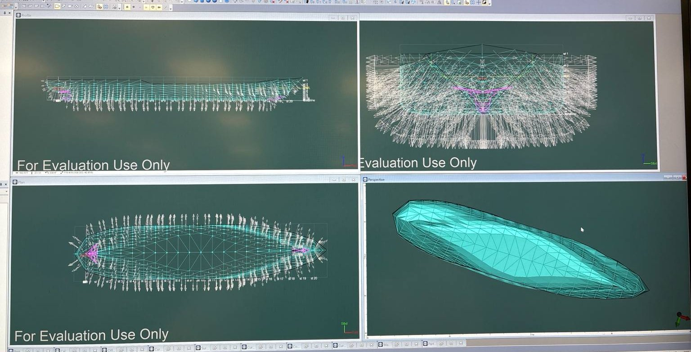
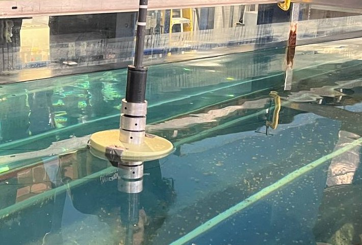
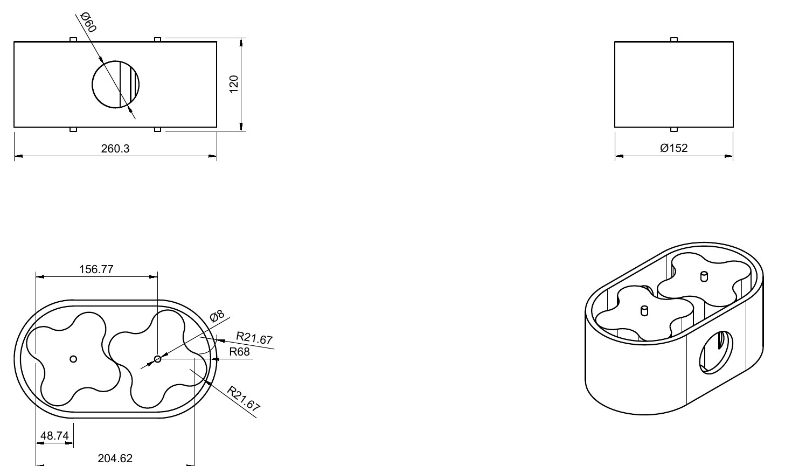
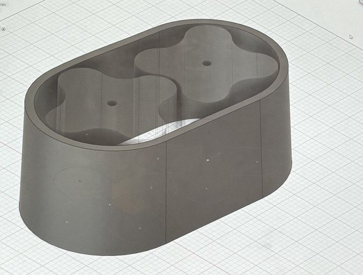
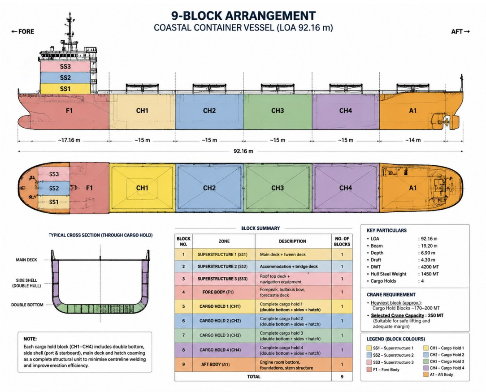
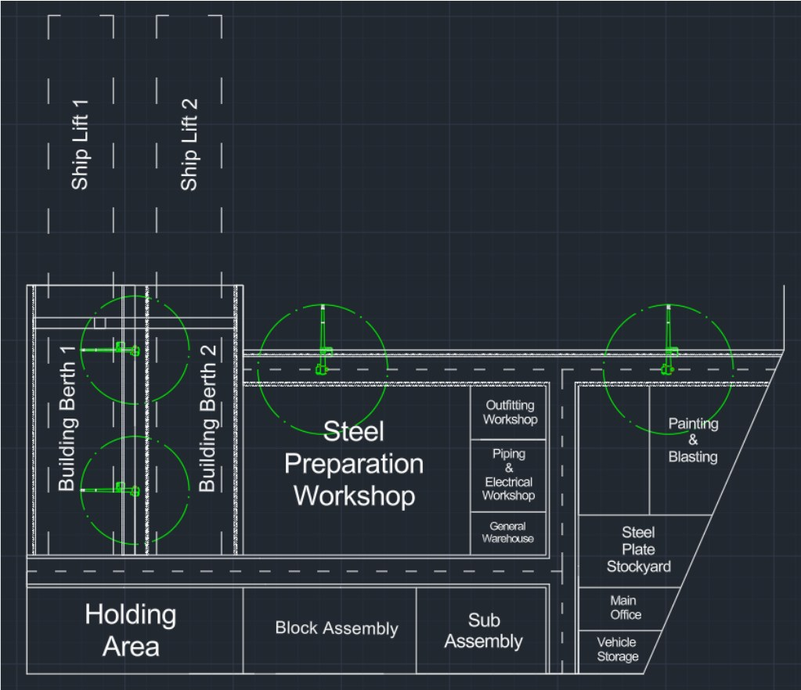
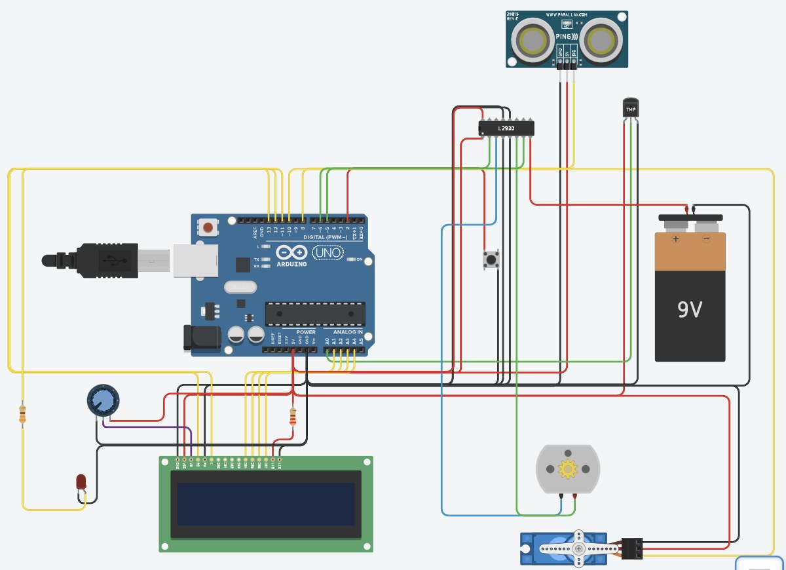

Portfolio · 2026 / 27
Vessel Performance · Marine Systems · Data · Visual Communication
Singapore Institute of Technology
Naval Architecture & Marine Engineering
Marine Engineering Specialisation
02 — About
From communication design
to marine engineering.
I am a Naval Architecture & Marine Engineering undergraduate at the Singapore Institute of Technology, specialising in Marine Engineering. I am particularly interested in technical ship management, vessel performance and fleet operations.
I started out in Communication Design, then served as a Naval Officer Cadet in the Republic of Singapore Navy, where I became interested in how a ship's systems are run and maintained. This is what led me to study marine engineering.
My design background still shapes how I work. I start by understanding the technical problem, analyse the data, then present the results clearly so others can use them. When a project needs something I have not learnt yet, I am comfortable picking it up on my own.
Areas of focus
Marine systems and machinery
Naval architecture and performance
Simulation and analytics
Visual communication
Currently seeking internship opportunities in
fleet operations and technical ship management.
03 — Project Index
For group projects, my individual contribution is stated on each page.
Build a 3D hull from a table of offsets, then estimate the resistance and effective power the ship needs across a range of speeds.
Scaled the parent offset table to a 126 m LBP vessel, built the hull in Maxsurf Modeler, and ran hydrostatics and resistance prediction.

When speed doubles from 10 to 20 kn, resistance rises about 6.5× while effective power rises about 13×, since power is resistance multiplied by speed. This is why reducing speed (slow steaming) has such a large effect on fuel consumption.
Building the hull took time, but interpreting the results and relating them to ship operations was where I learnt the most.
Two ways to estimate the resistance of a full-size ship: calculate it with an empirical method, or test a scale model and extrapolate the result.
My contribution: Holtrop–Mennen calculations
My contribution: 1.0 m/s run & scaling

Insight · My hand calculation matched Maxsurf within 1.6%, with 75–83% of the resistance being viscous. In the tank, my run (3.016 N at 0.98 m/s) scaled up to 2.13 kN and 7.25 kW at full size, using a form factor of 1.61.
Comparing both methods helped me understand the assumptions behind each one, and why their results can differ.


Size a rotary lobe pump that discharges water fast enough to produce useful thrust, then improve the design by changing one parameter at a time.
Reflection
Getting the two rotors to mesh without clashing in Fusion 360 took more troubleshooting than the calculations.

Plan the construction of two 92 m coastal container vessels built back to back, from steel plate to delivery.
My contribution: block arrangement + presentation design
Split the hull into 9 blocks along bulkheads and deck levels, keeping each block within the yard's lifting capacity.

Production planning goes beyond calculations. How the hull is divided into blocks affects crane requirements, workshop space, manpower, work at height and when the second vessel can start, all of which affect cost.
This project showed me how a single engineering decision affects production, scheduling and cost.
Identify what drives fuel consumption and CO₂ emissions, and use clustering to group similar vehicles. Data: Canada's Fuel Consumption Ratings for road vehicles, model years 1995–2026.
My contribution: Section 3, machine learning models (multiple linear regression and K-means clustering)
Engine size alone correlated strongly with fuel use (r = 0.81).
The dataset covered road vehicles, but the same workflow can be applied to vessel fuel consumption, fleet performance monitoring, emissions reporting and CII.
Next Steps
I would like to apply the same models to vessel noon-report data, using factors such as speed, draught and weather instead of engine size.
Lab tests on a 2.3 m, 27 kg ship model: measuring its intact stability, then flooding a hold and comparing predictions with measurements.
Inclining Experiment
Group of 6Group result: GMT = 0.142 m from six weight shifts
Cross-flooding Hold 6 · Lost Buoyancy Method
Group of 6My contribution: Part 3, sections 3.1–3.5
Water depth and area of the flooded hold, parallel sinkage, the damaged waterplane's second moment, and the shift in LCF and VCB.
Insight · Losing the hold's waterplane cut BMT by about 12%. Predicted GMT matched the measurement within 3%, but draughts and trim showed larger differences. The model still trimmed by the stern, but less than calculated.
Reflection
Airflow from the lab fans affected our readings, which showed me how sensitive small-scale tests are to their surroundings.
Two NME2103 labs on common engine room equipment: pumps that move fluid, and heat exchangers that transfer heat.
A · Centrifugal Pumps — Single vs Series
Group of 4My contribution: Experiment 2, pumps in series
Insight · Two pumps in series nearly doubled the head at 40 LPM (16.4 m vs 8.7 m), but the gain became smaller as flow increased. A series arrangement suits high-resistance systems rather than increasing flow.
B · Shell-and-Tube Heat Exchanger
Group of 4My contribution: Section 2, energy balance & heat losses; Conclusion
Insight · Losses fell from 50% to 29% as the hot tank warmed from 45 to 60 °C. However, in Tests 3 and 4 the hot side appeared to give up to 3,453 W, more than the 3,000 W heater can supply, which points to a likely flow sensor error.
Reflection
Some results looked consistent but were not physically possible. I learnt to check results against the limits of the equipment, not just the trend.
13 — Selected Additional Work
Projects outside my core marine engineering modules that developed skills I continue to use.
An Arduino "Titanic" that cruises a set route, detects an iceberg with an ultrasonic sensor (<15 cm), swings its servo rudder to steer clear, then flashes SOS in Morse and shows water temperature on an LCD.
Group of 2 · My contribution: your part
Design brief
Detect an obstacle, steer around it without user input, and signal for help.

My contribution: mitigating actions to close the gaps we identified; co-wrote the recommendations and conclusion.
Takeaway
A strong technical proposal still needs a clear business case.
Both started with defining the problem clearly before developing a solution, an approach I apply across my engineering work.
14 — Skills
Naval Architecture
Marine Engineering
Ship Resistance
Stability
Marine Structures
Thermodynamics
Marine Machinery
Maxsurf
Fusion 360
Excel
Python
Jupyter Notebook
SCADA
Technical Reporting
Data Visualisation
Adobe Illustrator
Adobe Photoshop
Presentation Design
Lee Jia Xian
Open to internship opportunities and always happy to talk about my projects.